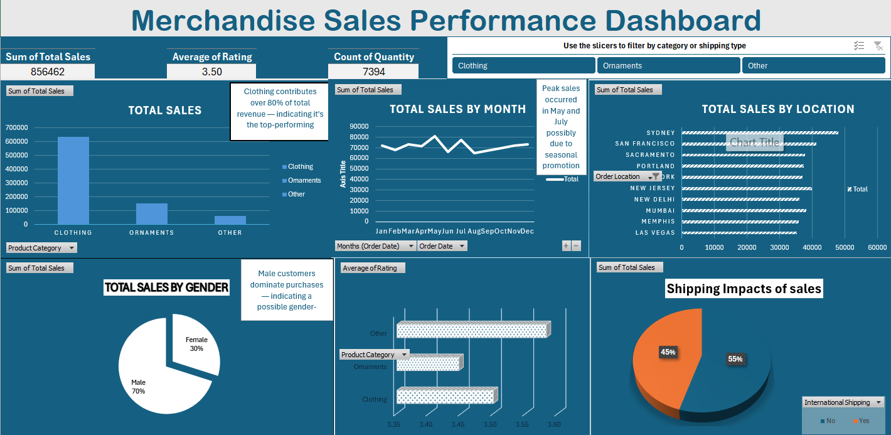
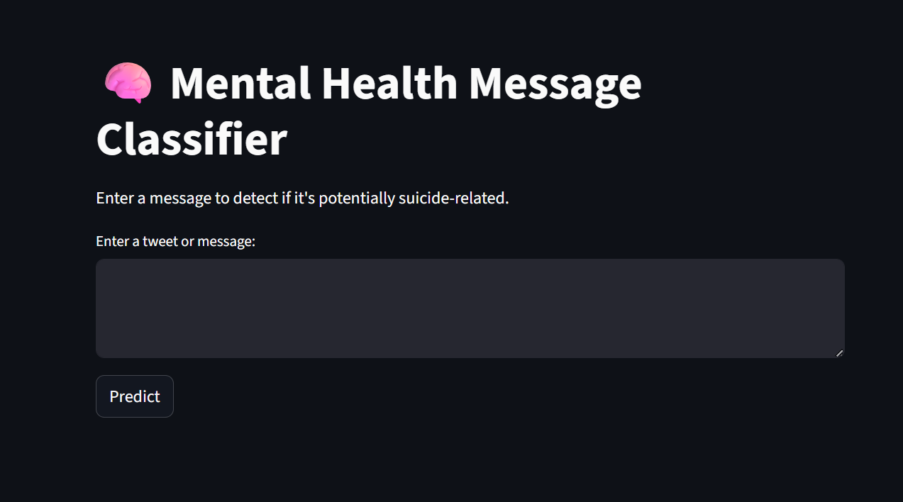

Projects
📊 Mobile Sales Dashboard (Power BI)
An interactive Power BI dashboard analyzing mobile sales trends across regions, brands, and price segments. Includes insights on payment methods, customer ratings, and city-wise performance.
 View on GitHub
View on GitHub
📊 Excel: Merchandise Sales Dashboard
Developed a complete Excel dashboard analyzing 5,000+ sales transactions. Used PivotTables, slicers, and visual KPIs to showcase performance by city, category, and shipping method.
Download Excel File
🧠 NLP: Mental Health Detection (Live App)
This Streamlit app detects suicide and depression-related tweets using NLP. It processes user input, classifies intent, and provides alerts based on mental health indicators.
 Try the App Live📊 Deloitte Forage Simulation
- Completed a Deloitte job simulation involving data analysis and forensic technology
- Created a data dashboard using Tableau
- Used Excel to classify data and draw business conclusions
📊 Tata Data Visualisation: Empowering Business with Effective Insights
Tata Data Visualisation: Empowering Business with Effective Insights Job Simulation on Forage - August 2025
- Completed a simulation involving creating data visualizations for Tata Consultancy Services
- Prepared questions for a meeting with client senior leadership
- Created visuals for data analysis to help executives with effective decision making